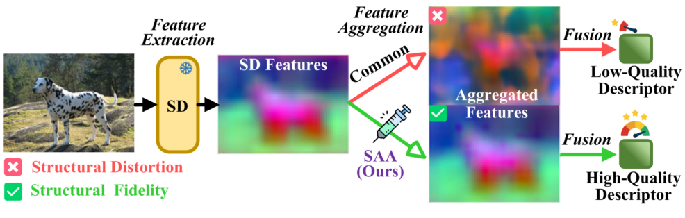

IEEE TIP 2026

IEEE TIP 2026
Revisiting Semantic Correspondence: When Feature Aggregation Hurts Structural Integrity
IEEE Transactions on Image Processing, 2026.
[Paper][Code]
[BibTeX]
@article{Wang2026RevisitingSemanticCorrespondence,
author = {Wang, Zenghui and Du, Songlin and Chen, Cheng and Lu, Xiaobo and Xiao, Guobao},
title = {{Revisiting Semantic Correspondence: When Feature Aggregation Hurts Structural Integrity}},
journal = {IEEE Transactions on Image Processing},
year = {2026},
volume = {35},
pages = {8788--8803},
doi = {10.1109/tip.2026.3721370},
url = {https://doi.org/10.1109/tip.2026.3721370}
}